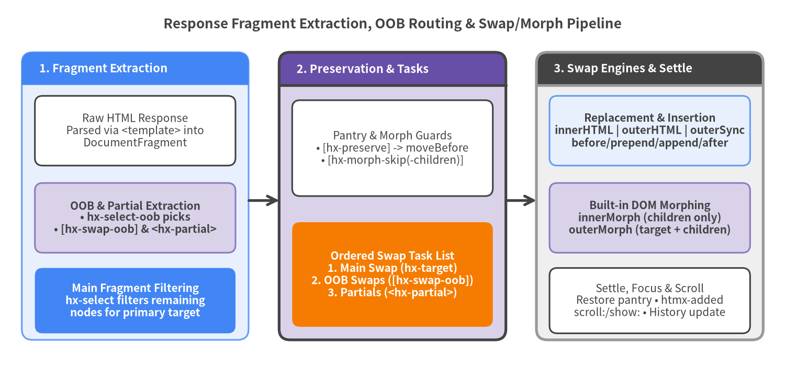

Target & Swap Attributes
Target and swap attributes govern where server-rendered HTML fragments are placed in the DOM, which swap or morph algorithm is applied, how out-of-band (hx-swap-oob and <hx-partial>) multi-target updates are extracted, and which DOM subtrees or stateful elements (<video>, <iframe>, active third-party widgets) are preserved across updates.
| Symbol | Category | Default / Scope | Inheritance | Key Capabilities |
|---|---|---|---|---|
hx-target |
Primary Target Resolution | this (or document.body if boosted) |
Non-inherited (use :inherited to share) |
Standard CSS selectors + extended relative selectors (this, closest, find, next, previous, host, global) |
hx-swap |
Swap Style & Timing | htmx.config.defaultSwapStyle (innerHTML) |
Inherited by default | 12 swap styles (including innerMorph, outerMorph, outerSync) + 12 HCON modifiers |
hx-swap-oob |
Out-of-Band Attribute | Matches #id or explicit <style>:<selector> |
Non-inherited (response marker) | Extracts secondary fragments from response and swaps them after the main swap |
<hx-partial> |
Out-of-Band Element | Target via hx-target or id |
N/A (HTML custom element) | First-class multi-target wrapper in htmx 4 (<hx-partial hx-target="..." hx-swap="...">) |
hx-select |
Response Filtering | Entire response fragment | Inherited by default | Filters main swap payload to nodes matching a CSS selector |
hx-select-oob |
Client-Driven OOB | None | Inherited by default | Extracts comma-separated <selector>[:<swapStyle>] nodes from response for OOB swapping |
hx-morph-skip |
Morph Preservation | Matches htmx.config.morphSkip |
Non-inherited | Skips morphing both attributes and children of the element during innerMorph / outerMorph |
hx-morph-skip-children |
Morph Preservation | Matches htmx.config.morphSkipChildren |
Non-inherited | Morphs attributes on the element itself while freezing its child subtree |
hx-preserve |
Pantry Preservation | Requires unique id attribute |
Non-inherited | Relocates live elements (<video>, <iframe>) to a hidden pantry via moveBefore() across swaps |

Source Code
from drawlib.canvas import save, setup
from drawlib.lines import line
from drawlib.shapes import rectangle
from drawlib.smartarts import Panel
from drawlib.styles import Styles
from drawlib.text import text
setup(width=180, height=84, dpi=150)
text((90, 78.5), "Response Fragment Extraction, OOB Routing & Swap/Morph Pipeline", style=Styles.DarkBold.patch(text_size=12.5))
# Column 1: Response Parsing & Extraction
p1 = Panel(
"1. Fragment Extraction",
style=Styles.PrimaryNeutral,
header_style=Styles.PrimaryFlat,
text_style=Styles.WhiteBold.patch(text_size=10.5),
header_height=7.5,
)
p1.draw((5, 6), width=52, height=66, align="bottom_left")
rectangle((31, 54), width=46, height=16, style=Styles.White.patch(shape_r=1.8), text="Raw HTML Response\nParsed via <template> into\nDocumentFragment", text_style=Styles.Dark.patch(text_size=10.0))
rectangle((31, 34), width=46, height=16, style=Styles.SecondaryNeutral.patch(shape_r=1.8), text="OOB & Partial Extraction\n• hx-select-oob picks\n• [hx-swap-oob] & <hx-partial>", text_style=Styles.DarkBold.patch(text_size=10.0))
rectangle((31, 15), width=46, height=15, style=Styles.PrimaryFlat.patch(shape_r=1.8), text="Main Fragment Filtering\nhx-select filters remaining\nnodes for primary target", text_style=Styles.WhiteBold.patch(text_size=10.0))
# Column 2: Preservation & Task Queue
p2 = Panel(
"2. Preservation & Tasks",
style=Styles.SecondaryNeutral,
header_style=Styles.SecondaryBold,
text_style=Styles.WhiteBold.patch(text_size=10.5),
header_height=7.5,
)
p2.draw((64, 6), width=52, height=66, align="bottom_left")
rectangle((90, 50), width=46, height=22, style=Styles.White.patch(shape_r=1.8), text="Pantry & Morph Guards\n• [hx-preserve] -> moveBefore\n• [hx-morph-skip(-children)]", text_style=Styles.Dark.patch(text_size=10.0))
rectangle((90, 21), width=46, height=24, style=Styles.AccentFlat.patch(shape_r=1.8), text="Ordered Swap Task List\n1. Main Swap (hx-target)\n2. OOB Swaps ([hx-swap-oob])\n3. Partials (<hx-partial>)", text_style=Styles.WhiteBold.patch(text_size=10.0))
# Column 3: Swap Styles & Post-Swap
p3 = Panel(
"3. Swap Engines & Settle",
style=Styles.Neutral,
header_style=Styles.DarkBold,
text_style=Styles.WhiteBold.patch(text_size=10.5),
header_height=7.5,
)
p3.draw((123, 6), width=52, height=66, align="bottom_left")
rectangle((149, 54), width=46, height=16, style=Styles.PrimaryNeutral.patch(shape_r=1.8), text="Replacement & Insertion\ninnerHTML | outerHTML | outerSync\nbefore/prepend/append/after", text_style=Styles.DarkBold.patch(text_size=10.0))
rectangle((149, 34), width=46, height=16, style=Styles.SecondaryNeutral.patch(shape_r=1.8), text="Built-in DOM Morphing\ninnerMorph (children only)\nouterMorph (target + children)", text_style=Styles.DarkBold.patch(text_size=10.0))
rectangle((149, 15), width=46, height=15, style=Styles.White.patch(shape_r=1.8), text="Settle, Focus & Scroll\nRestore pantry • htmx-added\nscroll:/show: • History update", text_style=Styles.Dark.patch(text_size=10.0))
# Connectors
line((57, 38), (64, 38), arrow_head="->", style=Styles.DarkBold)
line((116, 38), (123, 38), arrow_head="->", style=Styles.DarkBold)
save()
Primary Target & Swap Specification#
hx-target#
Specifies the target DOM element into which the response HTML will be swapped. In htmx v4.0.1, hx-target is not inherited by default (hx-target is excluded from htmx.config.inheritedAttributes unless :inherited is explicitly appended, e.g. hx-target:inherited="#main").
Syntax
<element hx-target="<css-selector> | <extended-selector>"></element>
Extended Selector Reference (__resolveRelative / __querySelectorAllExt)
| Selector Syntax | Resolution Behavior in htmx v4.0.1 |
|---|---|
<css-selector> |
Standard CSS selector queried within the current root node (document or enclosing ShadowRoot). |
this / self |
Resolves to the element itself. |
closest <selector> |
Walks up the ancestor chain (elt.closest(selector)) and returns the nearest matching ancestor. |
find <selector> |
Queries descendants of the element (elt.querySelector(selector)) and returns the first match. |
findAll <selector> |
Queries all matching descendants (elt.querySelectorAll(selector)). |
next |
Resolves to elt.nextElementSibling. |
next <selector> |
Scans forward in document order after elt and returns the first element matching <selector>. |
previous |
Resolves to elt.previousElementSibling. |
previous <selector> |
Scans backward in document order before elt and returns the nearest preceding element matching <selector>. |
body |
Resolves to document.body. |
document / window |
Resolves to document or window (primarily used in from: trigger selectors). |
host |
When inside a Shadow DOM (ShadowRoot), resolves to rootNode.host. |
global <selector> |
Queries the top-level document even when the element resides inside an encapsulated ShadowRoot. |
Usage Examples
<!-- Target an explicit ID -->
<button hx-get="/api/details/7" hx-target="#detail-pane">View Details</button>
<section id="detail-pane"></section>
<!-- Relative targeting using closest and next -->
<div class="card">
<button hx-post="/api/cards/7/like" hx-target="next .like-count">Like</button>
<span class="like-count">12</span>
<button hx-delete="/api/cards/7" hx-target="closest .card" hx-swap="outerHTML">Remove Card</button>
</div>
<!-- Explicit inheritance onto child buttons using :inherited -->
<div hx-target:inherited="#workspace-panel">
<button hx-get="/views/overview">Overview</button>
<button hx-get="/views/metrics">Metrics</button>
</div>
<main id="workspace-panel"></main>
hx-swap#
Controls how the response HTML is inserted, morphed, or deleted relative to the target element, along with timing delays, View Transitions, title extraction, and viewport scrolling. Unlikehtmx 2 where morphing required an external extension, htmx v4.0.1 includes built-in DOM morphing (innerMorph and outerMorph) and synchronous layout replacement (outerSync) in core.
Syntax
<element hx-swap="<swapStyle> [modifier:value ...]"></element>
All 12 Swap Styles in htmx v4.0.1
| Swap Style | Legacy Alias | DOM Mutation Behavior |
|---|---|---|
innerHTML |
(Default) | Replaces all child nodes of the target element with the response fragment. |
outerHTML |
— | Replaces the entire target element with the response fragment (target.replaceWith(fragment)). Note: replaces the outer wrapper immediately and settles inner children asynchronously if swap: delay is used. |
outerSync |
— | Synchronous full-element replacement (target.replaceWith(fragment) inside the settle phase). Used internally by history restoration and ideal when outer + inner replacement must happen atomically in one frame. |
innerMorph |
— | Built-in DOM morphing: diffs and patches the target's children in place against the response fragment, preserving focus, selection, CSS transition states, and unmodified DOM nodes. |
outerMorph |
— | Built-in DOM morphing: diffs and patches the target element itself (including its attributes) and its children against the response fragment. |
textContent |
— | Sets target.textContent = fragment.textContent without interpreting HTML markup inside the target. |
before |
beforebegin |
Inserts the response fragment immediately before the target element as a preceding sibling (target.before(fragment)). |
prepend |
afterbegin |
Inserts the response fragment before the first child inside the target element (target.prepend(fragment)). |
append |
beforeend |
Inserts the response fragment after the last child inside the target element (target.append(fragment)). |
after |
afterend |
Inserts the response fragment immediately after the target element as a following sibling (target.after(fragment)). |
delete |
— | Removes the target element from the DOM (target.remove()), ignoring any response markup. |
none |
— | Does not modify the primary target DOM (out-of-band hx-swap-oob and <hx-partial> fragments are still processed). |
All 12 hx-swap Modifiers
| Modifier Syntax | Value Type | Default | Description & Behavior in htmx v4.0.1 |
|---|---|---|---|
swap:<time> |
Duration (100ms, 0.5s) |
htmx.config.defaultSwapDelay (0) |
Delay between receiving the response and performing the DOM swap (allows CSS exit animations via .htmx-swapping). |
settle:<time> |
Duration (20ms, 100ms) |
htmx.config.defaultSettleDelay (0) |
Delay after swapping before removing .htmx-added and firing htmx:after:swap (enables CSS entry transitions). |
transition:true|false |
Boolean | htmx.config.transitions (false) |
Wraps the swap task queue in document.startViewTransition() when supported by the browser. |
ignoreTitle:true|false |
Boolean | false |
When true, skips extracting and updating document.title from <title> tags in the response. |
strip:true|false |
Boolean | false on main swap; !style.startsWith('outer') on OOB |
When true, unwraps the outermost root element of the response fragment before swapping its children. |
focusScroll:true|false |
Boolean | htmx.config.defaultFocusScroll (false) |
Controls whether restoring focus to an active element with a matching id scrolls the viewport (focus({ preventScroll: !focusScroll })). |
scroll:top|bottom |
'top' | 'bottom' |
None | Directly sets scrollTop on the target (or scrollTarget) to the top (0) or bottom (scrollHeight). |
scrollTarget:<selector> |
CSS / Extended Selector | Primary target | Specifies which scrollable container scroll:top or scroll:bottom scrolls. |
show:top|bottom |
'top' | 'bottom' |
'top' when hx-boost is active |
Calls scrollIntoView({ block: 'start' | 'end', behavior: htmx.config.scrollBehavior }) on the target (or showTarget). |
showTarget:<selector> |
CSS / Extended Selector | Primary target | Specifies which element is scrolled into view by show:top or show:bottom. |
swapEmpty:true|false |
Boolean | false |
Forces the main swap to execute even if the response body is empty after extracting <hx-partial> or [hx-swap-oob] elements. |
target:<selector> |
CSS / Extended Selector | hx-target value |
Overrides the target element directly within the hx-swap specification (useful in HX-Reswap headers or hx-status:XXX). |
Usage Examples
<!-- 1. Built-in innerMorph with View Transitions enabled -->
<section id="dashboard"
hx-get="/api/dashboard/refresh"
hx-trigger="every 10s"
hx-swap="innerMorph transition:true">
<!-- Live inputs and open details elements keep their state -->
</section>
<!-- 2. Append chat message and smoothly scroll container to bottom -->
<form hx-post="/api/chat/messages"
hx-target="#message-list"
hx-swap="append scroll:bottom scrollTarget:#chat-viewport">
<input type="text" name="text" required>
<button type="submit">Send</button>
</form>
<!-- 3. Animated exit & entry using swap and settle delays -->
<div class="notification"
hx-delete="/api/notifications/99"
hx-target="this"
hx-swap="delete swap:300ms">
Dismiss Notification
</div>
Out-of-Band & Multi-Target Swaps#
When a single user action affects multiple independent regions of the page (for example, adding an item to a cart updates both the main product card and the navbar cart badge), htmx v4.0.1 provides three complementary mechanisms: hx-swap-oob, <hx-partial>, and hx-select-oob.
hx-swap-oob#
Placed on top-level or nested elements inside the server's HTML response, hx-swap-oob instructs htmx to extract the element from the main response fragment and swap it directly into a matching target in the document after the main swap task completes.
Syntax (in Server Response HTML)
<!-- Match target by element's id attribute using default outerHTML swap -->
<div id="cart-badge" hx-swap-oob="true">3 items</div>
<!-- Explicit swap style + optional target selector -->
<div id="notifications" hx-swap-oob="prepend">New alert!</div>
<li hx-swap-oob="append:#activity-log">User logged in</li>
| Attribute Value Format | Resolved Target | Resolved Swap Style & strip Default |
|---|---|---|
hx-swap-oob="true" or hx-swap-oob="" |
#<element.id> |
outerHTML (strip: false) |
hx-swap-oob="<swapStyle>" |
#<element.id> |
<swapStyle> (strip: true unless style starts with outer) |
hx-swap-oob="<swapStyle>:<selector>" |
All elements matching <selector> |
<swapStyle> (strip: true unless style starts with outer) |
Usage Examples
<!-- Server response to POST /api/cart/items -->
<!-- 1. Main swap content (swapped into hx-target of triggering button) -->
<button class="btn-success" disabled>Added to Cart ✓</button>
<!-- 2. Out-of-band update for header badge (outerHTML by #cart-count) -->
<span id="cart-count" hx-swap-oob="true" class="badge">4</span>
<!-- 3. Out-of-band toast notification appended to #toast-container -->
<div hx-swap-oob="append:#toast-container">
<div class="toast">Wireless Keyboard added to your cart.</div>
</div>
<hx-partial>#
New in htmx v4.0.1, <hx-partial> is a dedicated HTML element for clean, declarative multi-target server responses. Unlike hx-swap-oob where strip behavior depends on whether the swap style is outerHTML vs innerHTML, <hx-partial> always acts as a pure transport envelope: its inner contents are swapped into its declared hx-target (or #<id>) using its own hx-swap attribute (defaulting to htmx.config.defaultSwapStyle, innerHTML).
Furthermore, when a response contains one or more <hx-partial> elements and no remaining main content, htmx v4.0.1 automatically skips the empty main swap (preventing accidental clearing of the triggering element) unless swapEmpty:true is explicitly set.
Syntax (in Server Response HTML)
<hx-partial hx-target="<selector>" [hx-swap="<swapSpec>"]>
<!-- Inner HTML payload to swap into target -->
</hx-partial>
<!-- Shorthand using id attribute (targets #<id>) -->
<hx-partial id="sidebar-summary" hx-swap="innerMorph">
<!-- Inner HTML payload -->
</hx-partial>
Attribute on <hx-partial> |
Required? | Description & Behavior in htmx v4.0.1 |
|---|---|---|
hx-target |
Required (unless id is set) |
CSS or extended selector identifying the DOM target(s) to update. |
id |
Fallback target | If hx-target is omitted, htmx targets #${id}. |
hx-swap |
Optional | Any valid hx-swap style and modifier string (defaults to htmx.config.defaultSwapStyle, i.e., innerHTML). |
Usage Examples
<!-- Server response returning pure multi-target partials with zero main-target boilerplate -->
<hx-partial hx-target="#order-table tbody" hx-swap="prepend">
<tr id="order-501">
<td>#501</td>
<td>Pending</td>
</tr>
</hx-partial>
<hx-partial id="order-stats" hx-swap="innerMorph">
<div class="stat">Total Orders: <strong>128</strong></div>
<div class="stat">Pending: <strong>14</strong></div>
</hx-partial>
Response Filtering Attributes#
When your server returns a full HTML page or a larger component template rather than a dedicated partial, hx-select and hx-select-oob let the client cherry-pick specific elements from the response.
hx-select#
Placed on the requesting element (or inherited from an ancestor), hx-select filters the server's HTML response so that only elements matching the specified CSS selector are used for the primary swap.
Syntax
<element hx-get="<url>" hx-select="<css-selector>" hx-target="<target>"></element>
| Aspect | Specification in htmx v4.0.1 |
|---|---|
| Execution Order | Runs in __handleResponse() after hx-select-oob and [hx-swap-oob] / <hx-partial> extraction. |
| Server Override | Can be overridden by hx-status:XXX="select:<selector>" or the HX-Reselect HTTP response header. |
| Inheritance | Inherited by default. |
Usage Examples
<!-- Fetch a full page /docs/install and extract only #article-content -->
<a hx-get="/docs/install"
hx-select="#article-content"
hx-target="#doc-viewer"
hx-push-url="true">
Installation Guide
</a>
<article id="doc-viewer"></article>
hx-select-oob#
Placed on the requesting element (or inherited from an ancestor), hx-select-oob extracts one or more elements from a full-page or multi-component server response and promotes them into out-of-band swaps—without requiring the server response itself to include hx-swap-oob attributes.
Syntax
<element hx-get="<url>" hx-select-oob="<selector>[:<oobSwapSpec>], ..."></element>
| Entry Format | Behavior in htmx v4.0.1 |
|---|---|
#sidebar |
Finds #sidebar in the response and swaps it into #sidebar in the live DOM using outerHTML (hx-swap-oob="true"). |
#alerts:innerHTML |
Finds #alerts in the response and swaps its children into #alerts using innerHTML. |
.metric-card:outerMorph:#kpi-box |
Finds .metric-card in the response and morphs it into #kpi-box in the live DOM. |
Usage Examples
<!-- Refresh both the main table and the #pagination-bar from a full page response -->
<button hx-get="/products?page=3"
hx-select="#product-grid"
hx-select-oob="#pagination-bar:outerMorph, #total-count"
hx-target="#product-grid"
hx-swap="outerMorph">
Page 3
</button>
DOM Morphing & State Preservation Attributes#
When updating regions that contain stateful elements (such as playing <video> elements, <iframe> embeds, or third-party JavaScript widgets like maps and chart canvases), use htmx v4.0.1's morphing skip markers or pantry preservation.
hx-morph-skip#
Prevents htmx's built-in morph engine (innerMorph and outerMorph) from modifying both the attributes and the child subtree of an existing DOM element when morphing. Matches the default htmx.config.morphSkip = '[hx-morph-skip]' selector.
Syntax
<element hx-morph-skip></element>
| Aspect | Specification in htmx v4.0.1 |
|---|---|
| Applies To | hx-swap="innerMorph" and hx-swap="outerMorph" (including OOB and <hx-partial> morphs). |
| Attributes Morphed? | No — existing element attributes remain untouched. |
| Children Morphed? | No — existing child nodes remain untouched. |
| Configuration | Controlled globally via htmx.config.morphSkip (defaults to '[hx-morph-skip]'). |
Usage Examples
<div id="live-panel" hx-get="/api/panel" hx-trigger="every 5s" hx-swap="innerMorph">
<h2>System Telemetry</h2>
<p>CPU Load: 42%</p>
<!-- Keep third-party WebGL chart widget completely untouched during morphs -->
<div id="webgl-chart-container" hx-morph-skip></div>
</div>
hx-morph-skip-children#
Instructs htmx's built-in morph engine (innerMorph and outerMorph) to morph attributes on the element itself while skipping diffing or mutating its child subtree. Matches the default htmx.config.morphSkipChildren = '[hx-morph-skip-children]' selector.
Syntax
<element hx-morph-skip-children></element>
| Aspect | Specification in htmx v4.0.1 |
|---|---|
| Applies To | hx-swap="innerMorph" and hx-swap="outerMorph". |
| Attributes Morphed? | Yes — attributes such as class, data-*, and aria-* on the element are updated from the server response. |
| Children Morphed? | No — child nodes inside the element are frozen and preserved as-is. |
| Configuration | Controlled globally via htmx.config.morphSkipChildren (defaults to '[hx-morph-skip-children]'). |
Usage Examples
<div id="editor-shell" hx-get="/api/doc-state" hx-trigger="every 10s" hx-swap="outerMorph">
<!-- Update wrapper classes/data-status from server, but preserve rich-text editor DOM inside -->
<div id="rich-editor" class="editor-online" data-readonly="false" hx-morph-skip-children>
<div contenteditable="true">User's unsaved rich text DOM...</div>
</div>
</div>
hx-preserve#
Preserves an element across non-morph swaps (innerHTML, outerHTML, etc.) by relocating the live DOM node into a hidden pantry before the swap and moving it back into place afterward. In modern browsers supporting Element.prototype.moveBefore(), htmx v4.0.1 uses atomic DOM relocation (__moveBefore) so that <video>, <audio>, and <iframe> elements continue playing without reloading or losing playback state.
Syntax
<element id="<unique-id>" hx-preserve></element>
| Requirement / Behavior | Specification in htmx v4.0.1 |
|---|---|
Mandatory id |
The element must have a unique id attribute in both the existing DOM and the incoming server response HTML. |
| Atomic Relocation | Uses native parent.moveBefore(preservedElt, placeholder) when supported by the browser (falling back to replaceChild), preserving <iframe> browsing context and media playback state. |
Usage Examples
<!-- Both current page and incoming response contain <video id=" promo-stream" hx-preserve> -->
<article id="lesson-container" hx-get="/lessons/chapter-2" hx-target="this" hx-swap="innerHTML">
<h1>Chapter 1: Architecture</h1>
<video id="promo-stream" hx-preserve controls autoplay src="/media/livestream.mp4"></video>
<p>Lesson transcript and exercises...</p>
</article>